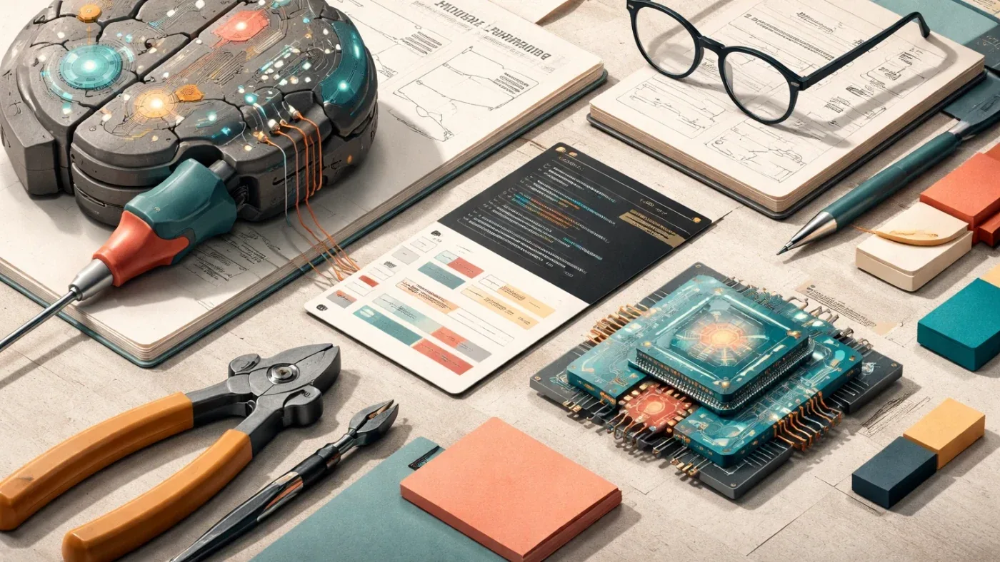
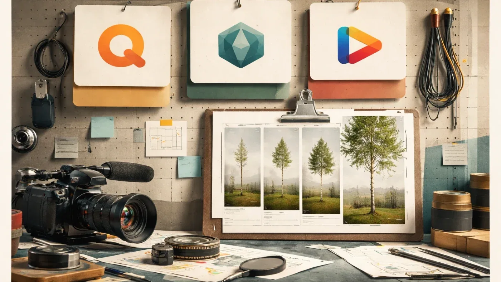
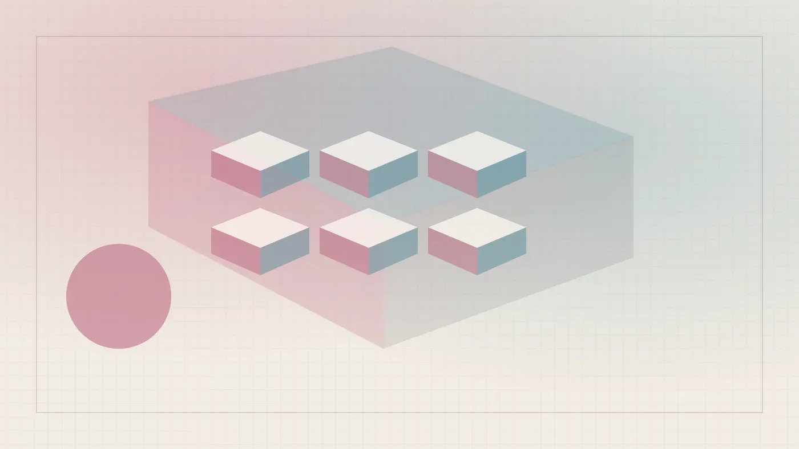
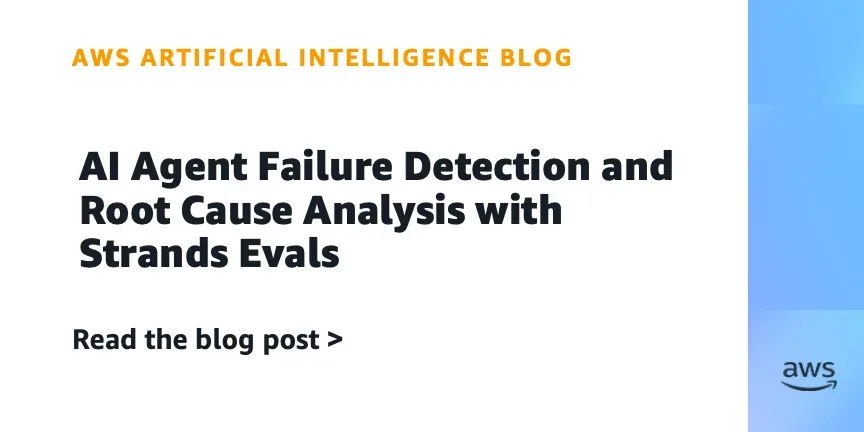
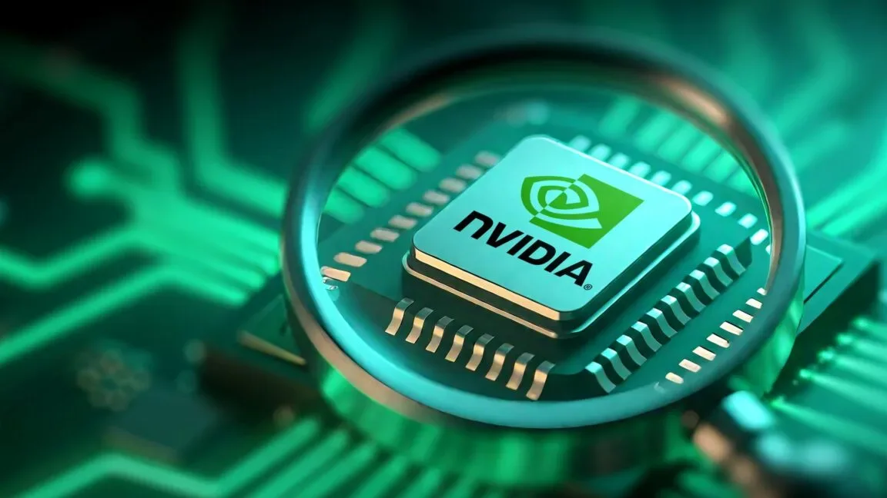
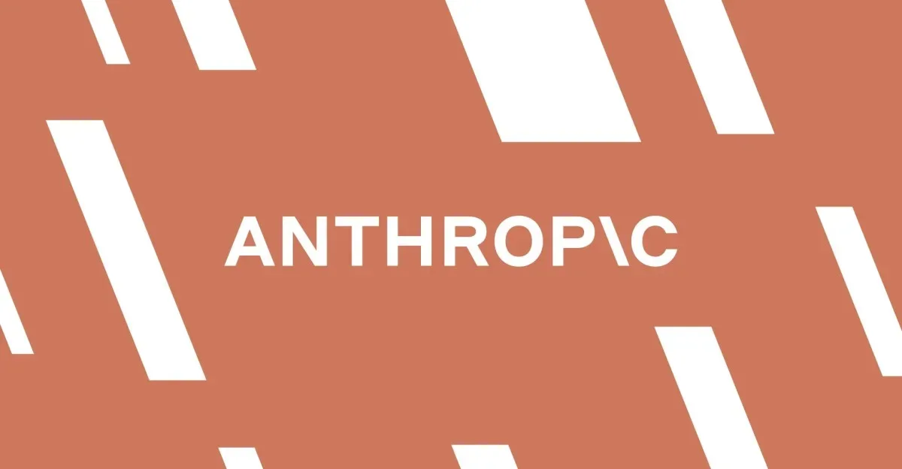

РоссияКод
Как превратить языковую модель в агента: пишем инструменты на Python с нуля
Семь инструментов на Python — и языковая модель начинает читать файлы, запускать bash и ходить в интернет
Habr AI
16 июн.Релизы, исследования, продукты, инвестиции и AI-рынок.
Архив · 741 новостных материалов · Автоматическое пополнение приостановлено
Семь инструментов на Python — и языковая модель начинает читать файлы, запускать bash и ходить в интернет
30% разработчиков деплоят ИИ-код без проверки. Почему это старая проблема в новой обёртке

Что происходит, когда ИИ убирает все барьеры — и зачем они вообще были нужны

Эксперимент с генерацией таймлапса роста березы выявил слабые места Qwen, Luma и Pika.

ИИ-пилот работает на демо, но застревает при масштабировании — вот почему и как это исправить
Почему даже самые умные LLM не смогут заменить весь спектр работы — и куда на самом деле стоит смотреть инвесторам.

Малайзийский стартап привлёк $62,5 млн на развитие ИИ-агентов для обработки сообщений клиентов
Трамп едва не заблокировал флагманские модели Anthropic — что стоит за 90-минутным ультиматумом

Студенты Стэнфорда освистали Сундара Пичаи из‑за контрактов Google с Минобороны Израиля и ICE.

Белый дом отключил модели Anthropic одним письмом — без суда и без объяснений. Что это значит для ИИ-отрасли
Meta внедрила в Facebook поиск с ИИ, который отвечает на вопросы, анализируя публичные посты пользователей.
Спилберг снял фильм о том, как видео пришельцев объединяет человечество — но в эпоху ИИ в подлинность таких видео уже никто не верит.

AWS показала, как автоматически находить причину сбоя ИИ-агента — без ручного разбора сотен логов
Три варианта Gemma 4 на Amazon Bedrock: от компактной E2B до мощной 31B с окном 256K токенов

Nvidia занимает $25 млрд на долговом рынке — и это сигнал о новых рисках в ИИ-финансах

SpaceX провела крупнейшее IPO в истории: $75 млрд, акции +19% в первый день и 4400 новых миллионеров

Meta запускает ИИ Mode в Facebook: поиск по публичным постам и новые ИИ-инструменты
США против Anthropic: можно ли вообще создать LLM, которую нельзя взломать?
Лоббисты Big Tech ищут последний шанс на федеральное регулирование ИИ, привязывая его к детской безопасности.
Отключение Anthropic Fable 5 и Mythos 5 по требованию США подстегнуло гонку суверенного ИИ в Европе, Канаде и Китае.

Правительство США обязало Anthropic отключить новейшие ИИ-модели Fable 5 и Mythos 5 для иностранцев.
BSS перевела Dialog Composer на ИИ-агентов: LLM, MCP и Python-инструменты вместо жёстких скриптов
Каждый второй сотрудник несёт рабочие данные в личный ChatGPT — чем это грозит бизнесу
Fork-Tech научила PWS централизованно управлять навыками ИИ-агентов — версии, доступы, обновления в одной точке

Разбираемся, как устроены ИИ-агенты, написав простейшего на Python

Почему Garak и PyRIT не подходят для российских компаний — и что с этим делать

ИИ-агенты делают кадровую работу, а HRIS этого не видит — чем это грозит HR-директорам

Как управлять LLM без дообучения: туториал по Activation Steering с кодом на PyTorch
Fable 5 и Opus 4.8 требуют противоположных промптов — разбор официальных гайдов Anthropic и OpenAI
Незнакомец пишет в бот — ИИ пишет код — код уходит в прод. Без единого ревью человеком